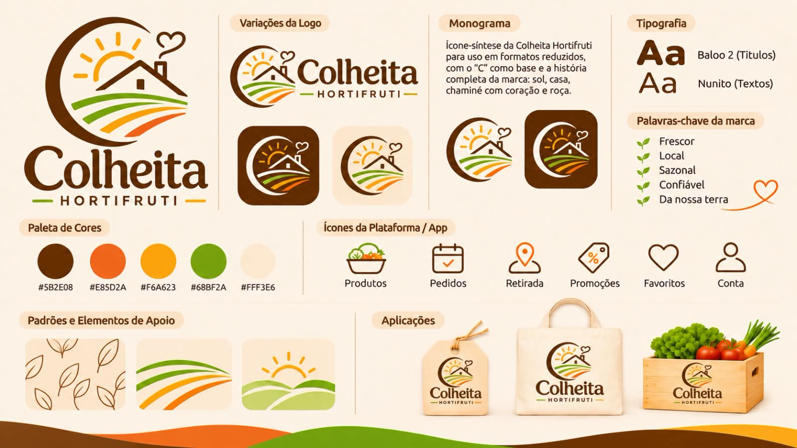

Identidade
O painel aprovado é a referência principal, com a composição original intacta.
Consultar painelFundamentos visuais aprovados e componentes digitais organizados para evoluir a Colheita Hortifruti.
Identidade oficial preservada · Componentes em validaçãoSlogan escolhido: “Da horta pra sua porta.” O manifesto permanece em revisão. Fotos, preços e pedidos na home não representam dados operacionais.

O painel aprovado é a referência principal, com a composição original intacta.
Consultar painelÍcones auxiliares, etiquetas, botões, espaçamento, estados e protótipo móvel.
Ver componentesPersonalidade e manifesto propostos; slogan escolhido: “Da horta pra sua porta.”
Ler propostasFresca, próxima, confiável, prática e alegre sem exageros. Uma voz que facilita a rotina, informa com clareza e respeita o que cada produto realmente oferece.
Uma boa conversa de feira: atenção ao detalhe, linguagem simples e confiança na informação.
Ver tom de voz“Acreditamos que escolher bem não deveria ser complicado. Que frescor tem a ver com cuidado, informação e confiança.”
Ler texto completo“Da horta pra sua porta.”
Ver decisão e manifestoExplore a primeira proposta da home, baseada na linguagem visual da Colheita, sem inventar catálogo ou preços reais.